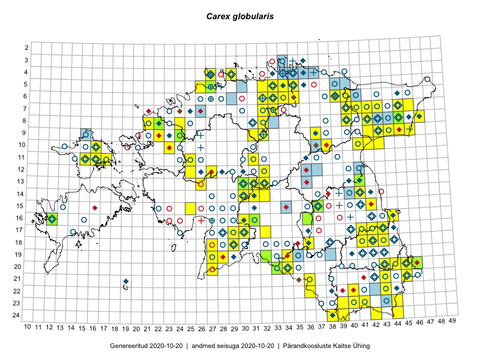

Carex globularis
Uuendatud: 2016-12-02
Kaardile koondatud taksonid: Carex globularis L.

Kaart põhineb 80 kirjel, neist vaatlusi 78 ja eksemplare 2. Taksonit on leitud 68 ruudust.
Kuvatud viited 20 esimesele andmebaasikirjele, ülejäänud PlutoFis
- Toomas Kukk, Peedu Saar: 2014-09-25: 07-42: ala
- Peedu Saar, Ott Luuk: 2015-06-21: 14-41: ala
- Ott Luuk, Peedu Saar: 2015-08-13: 24-44: ala
- Thea Kull: 2015-06-15: 10-16: GPS punkt
- Rein Kalamees, Kersti Püssa: 2015-08-16: 05-35: ala
- Thea Kull: 2015-06-15: 10-16: ala
- Ott Luuk, Hannes Pehlak: 2015-07-24: 09-44: ala
- Thea Kull, Peedu Saar: 2015-06-19: 17-41: ala
- Ott Luuk, Hannes Pehlak: 2015-06-11: 17-30: ala
- Thea Kull, Eerik Leibak: 2015-07-05: 17-43: ala
- Toomas Kukk, Peedu Saar: 2014-09-10: 07-43: ala
- Thea Kull, Eerik Leibak: 2015-09-10: 07-41: ala
- Maria Abakumova, Tiit Hallikma: 2015-07-09: 17-32: ala
- Mari Reitalu: 2015-06-28: 16-12: ala
- Mari Reitalu: 2015-06-28: 16-12: GPS punkt
- Ott Luuk, Toivo Sepp: 2015-08-18: 09-32: ala
- Maria Abakumova, Helle Mäemets: 2015-05-23: 19-32: ala
- Thea Kull, Meeli Mesipuu, Eerik Leibak: 2014-07-11: 06-40: ala
- Meeli Mesipuu, Timo Luhamäe: 2015-06-10: 13-30: ala
- Timo Luhamäe, Meeli Mesipuu: 2015-06-10: 13-30: GPS punkt